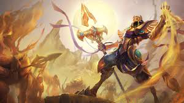

tu devrais essayer Azir

azir est l'un des personnages les plus difficiles à jouer du jeu du fait de sa méchanique de soldat qu'il invoque, il peut cependant rester très intéressant à jouer et avec de l'acharnement, un bon joueur d'azir peut surprendre tout le monde et facilement gagner une partie à lui seul